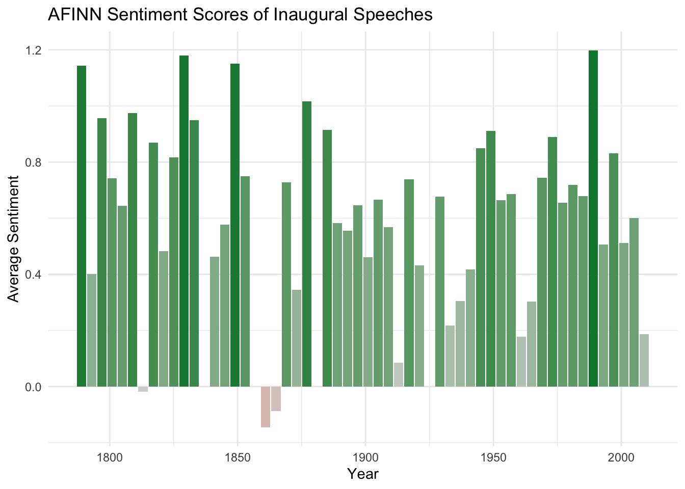

Sentiment Analysis Over Time
This is just another page that can be linked! You are not required to include more than just index.qmd, but you are welcome to make content on different pages, if desired. This may help with managing GitHub commits, as well.
Each page can have it’s own list of references based on what you cite. For example, did you know that good graphs “have a clear purpose, show the data clearly, and make the message obvious”? (Vandemeulebroecke et al. 2019).
References
Vandemeulebroecke, M., Baillie, M., Carr, D., Kanitra, L., Margolskee, A., Wright, A., and Magnusson, B. (2019), “How can we make better graphs? An initiative to increase the graphical expertise and productivity of quantitative scientists,” Pharmaceutical Statistics, 18, 106–114. https://doi.org/10.1002/pst.1912.